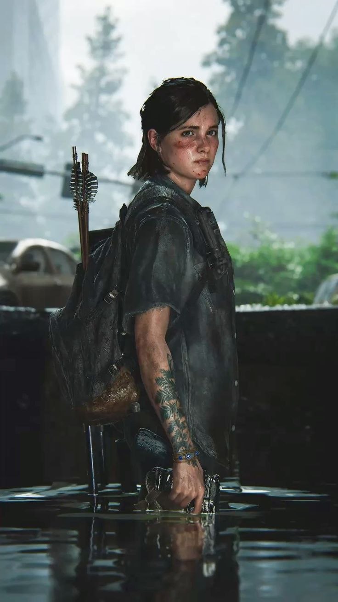
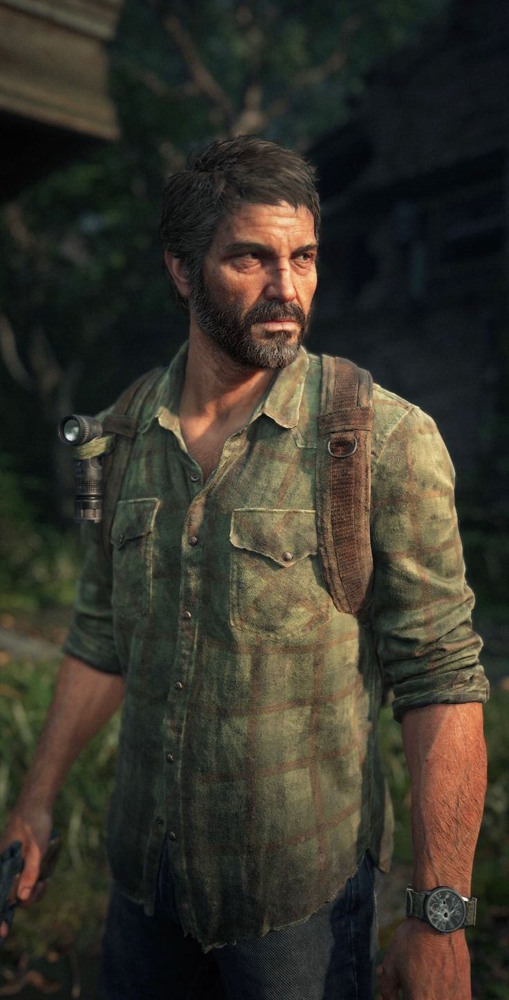

Personagens Principais

Ellie
Ellie é uma jovem imune à infecção que devasta o mundo. Corajosa e determinada, ela se torna peça-chave na luta pela sobrevivência e pela cura da humanidade.

Joel
Joel é um sobrevivente endurecido pelo tempo e pela perda. Ele assume a missão de proteger Ellie e, ao longo do caminho, desenvolve um forte vínculo com ela.